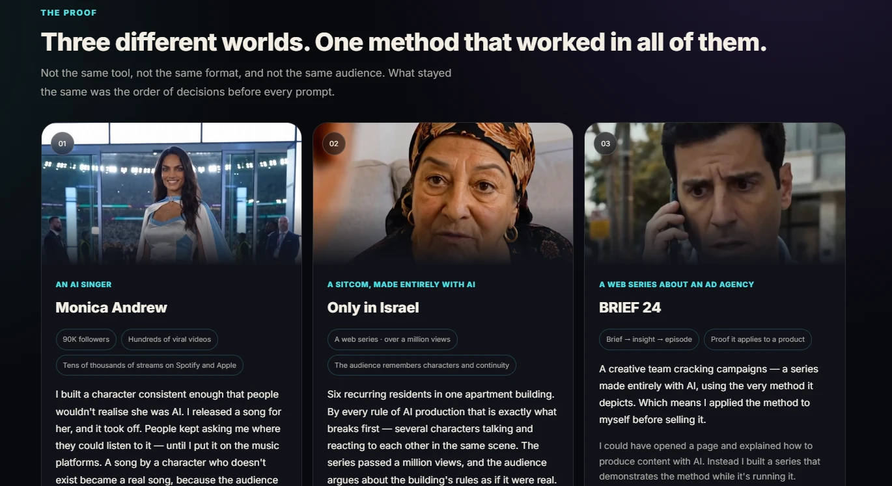

<meta charset="utf-8">
<title>OMER METHOD — Pinned Carousel</title>
<style>
/* ═══════════════════════════════════════════════════════════════════
   OMER METHOD — pinned carousel, 9 slides at 1080×1350 (4:5)
   Same "Signal & Grain" language as the story sequence, re-cut for the
   feed. Slide 01 is composed so its centre 1080×1080 survives the
   square crop Instagram applies in the profile grid.
   ═══════════════════════════════════════════════════════════════════ */
:root{
  --ground:#070A11; --ink:#080B12; --paper:#F2F4F8;
  --deck:#A9B2C4; --muted:#6E7889; --cy:#22D3EE; --cy-deep:#0B93B0;
  --hair:rgba(255,255,255,.10);
  --noise:url("data:image/svg+xml,%3Csvg xmlns='http://www.w3.org/2000/svg' width='220' height='220'%3E%3Cfilter id='n'%3E%3CfeTurbulence type='fractalNoise' baseFrequency='0.85' numOctaves='4' stitchTiles='stitch'/%3E%3C/filter%3E%3Crect width='220' height='220' filter='url(%23n)'/%3E%3C/svg%3E");
}
*{margin:0;padding:0;box-sizing:border-box}
body{background:#14171d;font-family:Rubik,sans-serif;-webkit-font-smoothing:antialiased}

.slide{position:relative;width:1080px;height:1350px;overflow:hidden;
       background:var(--ground);color:var(--paper)}
.slide + .slide{margin-top:44px}
.pad{position:absolute;left:80px;right:80px;top:96px;bottom:104px;
     display:flex;flex-direction:column;z-index:4}
.grow{flex:1;min-height:0}
.grain{position:absolute;inset:0;background-image:var(--noise);background-size:220px 220px;
       opacity:.13;mix-blend-mode:overlay;pointer-events:none;z-index:3}
.vig{position:absolute;inset:0;pointer-events:none;z-index:3;
     background:radial-gradient(120% 78% at 50% 42%,transparent 40%,rgba(4,6,11,.70) 100%)}

/* swipe affordance + position, bottom right */
.num{position:absolute;right:80px;bottom:52px;z-index:6;display:flex;align-items:center;gap:14px;
     font-size:20px;font-weight:600;letter-spacing:.24em;color:var(--muted);direction:ltr}
.num .arw{color:var(--cy);font-size:24px}
.paper .num{color:#66708A}

/* ── type grammar, same as the stories ── */
.en{direction:ltr;text-align:left}
.over{font-size:21px;font-weight:600;letter-spacing:.3em;text-transform:uppercase;
      color:var(--cy);direction:ltr;display:flex;align-items:center;gap:16px}
.over::after{content:'';flex:1;height:1px;background:linear-gradient(90deg,rgba(34,211,238,.5),transparent)}
.lead{direction:ltr;font-weight:800;letter-spacing:-.032em;line-height:1.05;font-size:82px}
.lead.xl{font-size:98px}
.lead.sm{font-size:64px;line-height:1.1}
.lead .cy{color:var(--cy)}
.lead .dim{color:#5D6779}
.deck{direction:ltr;font-size:32px;font-weight:400;line-height:1.5;color:var(--deck);max-width:840px}
.deck b{font-weight:700;color:var(--paper)}

.he-block{border-right:3px solid var(--cy);padding-right:28px;max-width:860px;margin-left:auto}
.he-line{direction:rtl;text-align:right;font-size:44px;font-weight:600;line-height:1.26;
         color:var(--paper);letter-spacing:-.012em}
.he-line.sm{font-size:38px;font-weight:500}
.he-deck{direction:rtl;text-align:right;font-size:27px;font-weight:400;line-height:1.5;
         color:var(--deck);margin-top:13px}
.paper .he-block{border-right-color:var(--cy-deep)}
.paper .he-line{color:var(--ink)}
.paper .he-deck{color:#4A5468}

.rule{height:1px;background:var(--hair)}
.chips{display:flex;flex-wrap:wrap;gap:11px;direction:ltr}
.chip{font-size:23px;font-weight:600;color:var(--cy);background:rgba(34,211,238,.09);
      border:1px solid rgba(34,211,238,.30);border-radius:100px;padding:10px 22px;white-space:nowrap}
.chip.plain{color:#9AA4B6;background:rgba(255,255,255,.045);border-color:rgba(255,255,255,.13)}

.ph{position:absolute;overflow:hidden}
.ph img{position:absolute;display:block;max-width:none;filter:contrast(1.08) saturate(1.06)}

/* ══ 01 · COVER — centre 1080×1080 (y 135→1215) must read as a grid tile ══ */
#s01 .strip{position:absolute;left:0;right:0;top:236px;height:524px;display:flex;gap:5px;z-index:1}
#s01 .cell{position:relative;flex:1;overflow:hidden}
#s01 .cell img{position:absolute;width:3288px;top:-461px}
#s01 .c1 img{left:-454px}
#s01 .c2 img{left:-1451px}
#s01 .c3 img{left:-2453px}
#s01 .cell::after{content:'';position:absolute;inset:0;
  background:linear-gradient(180deg,rgba(7,10,17,.62),transparent 34%,rgba(7,10,17,.72))}
#s01 .cap{position:absolute;left:20px;top:18px;z-index:2;font-size:20px;font-weight:700;
          letter-spacing:.1em;text-transform:uppercase;color:#DDE4EE;direction:ltr}
#s01 .g3{position:absolute;right:-40px;top:812px;font-size:400px;font-weight:900;line-height:.8;
         color:transparent;-webkit-text-stroke:2px rgba(34,211,238,.13);z-index:0;direction:ltr}

/* ══ 05 · monument ══ */
.mon{display:flex;align-items:flex-end;gap:26px;direction:ltr}
.mon .big{font-size:180px;font-weight:900;letter-spacing:-.055em;line-height:.82;
  background:linear-gradient(180deg,#EAF9FD,#3FC6E0);-webkit-background-clip:text;
  background-clip:text;color:transparent;filter:drop-shadow(0 0 46px rgba(34,211,238,.30))}
.mon .a{font-size:34px;font-weight:700}
.mon .b{font-size:21px;font-weight:600;letter-spacing:.2em;color:var(--muted);
        text-transform:uppercase;margin-top:6px}
.ledger{display:flex;flex-direction:column;gap:16px;direction:ltr}
.ledger .row{display:flex;align-items:center;gap:20px;font-size:27px;font-weight:600;
             color:var(--paper);padding:16px 0;border-top:1px solid var(--hair)}
.ledger .row i{display:block;width:5px;height:5px;border-radius:50%;background:var(--cy);opacity:.7}
.ledger .n{font-size:44px;font-weight:800;color:var(--cy);letter-spacing:-.03em;min-width:106px}
.ledger .l{font-size:25px;font-weight:500;color:var(--deck)}

/* ══ 06 · inverted payload ══ */
.paper{background:linear-gradient(168deg,#EEF1F6 0%,#E2E8F1 52%,#DCE6EF 100%);color:var(--ink)}
.paper .over{color:var(--cy-deep)}
.paper .over::after{background:linear-gradient(90deg,rgba(11,147,176,.45),transparent)}
.paper .deck{color:#48536A}
.paper .deck b{color:var(--ink)}
.paper .rule{background:rgba(8,11,18,.12)}
.card{background:var(--ink);border-radius:26px;padding:44px 46px;
      box-shadow:0 30px 70px rgba(8,11,18,.26)}
.card .q{font-size:21px;font-weight:600;letter-spacing:.26em;text-transform:uppercase;color:var(--cy)}
.card .a{font-size:52px;font-weight:800;line-height:1.14;margin-top:16px;color:var(--paper);
         letter-spacing:-.026em;direction:ltr}
.card .a .cy{color:var(--cy)}
.card .h{direction:rtl;text-align:right;font-size:34px;font-weight:600;color:var(--cy);margin-top:20px}

/* ══ 08 · guides ══ */
.glist{display:flex;flex-direction:column;gap:15px;direction:ltr;margin-top:6px}
.grow2{display:flex;align-items:baseline;gap:20px;border-bottom:1px solid var(--hair);padding-bottom:14px}
.gnum{font-size:22px;font-weight:800;color:transparent;-webkit-text-stroke:1.4px var(--cy);min-width:46px}
.gname{font-size:30px;font-weight:600;flex:1;line-height:1.22}
.gdesc{font-size:22px;font-weight:400;color:var(--muted);margin-top:5px}

/* ══ 09 · close ══ */
#s08{background:radial-gradient(94% 56% at 50% 116%,#0C4A5C 0%,#081826 46%,var(--ground) 76%)}
.mark{font-size:96px;font-weight:800;letter-spacing:-.035em;line-height:.98;direction:ltr}
.mark .cy{color:var(--cy);filter:drop-shadow(0 0 40px rgba(34,211,238,.42))}
.live{display:inline-flex;align-items:center;gap:12px;font-size:24px;font-weight:600;
      letter-spacing:.16em;text-transform:uppercase;color:var(--cy);direction:ltr;
      border:1px solid rgba(34,211,238,.4);border-radius:100px;padding:12px 26px}
.live i{width:9px;height:9px;border-radius:50%;background:var(--cy);box-shadow:0 0 14px var(--cy)}
.url{font-size:32px;font-weight:700;direction:ltr;color:var(--muted)}
.kw{display:flex;align-items:center;gap:22px;direction:ltr;
    border:2px solid var(--cy);border-radius:20px;padding:24px 30px;
    background:rgba(34,211,238,.07)}
.kw .w{font-size:56px;font-weight:900;letter-spacing:-.02em;color:var(--cy);
       filter:drop-shadow(0 0 26px rgba(34,211,238,.45))}
.kw .t{font-size:26px;font-weight:500;line-height:1.35;color:var(--paper)}
.kw .t b{display:block;font-weight:700;font-size:24px;color:var(--muted);
         direction:rtl;text-align:left;margin-top:6px}
.scope{display:flex;gap:70px;direction:ltr}
.scope .n{font-size:48px;font-weight:800;letter-spacing:-.03em;line-height:1}
.scope .n .cy{color:var(--cy)}
.scope .l{font-size:20px;font-weight:600;letter-spacing:.2em;color:var(--muted);
          margin-top:9px;text-transform:uppercase}
</style>

<!-- ═════════ 01 · COVER ═════════ -->
<section class="slide" id="s01">
  <style>#s01 .pad{top:152px}</style>
  <div class="g3">3</div>
  <div class="strip">
    <div class="cell c1"><div class="cap">Monica Andrew</div></div>
    <div class="cell c2"><div class="cap">Only in Israel</div></div>
    <div class="cell c3"><div class="cap">BRIEF 24</div></div>
  </div>
  <div class="grain"></div><div class="vig"></div>
  <div class="pad">
    <div class="over">Made entirely with AI</div>
    <div class="grow" style="max-height:700px"></div>
    <div class="en lead xl">Three worlds.<br><span class="cy">One method.</span></div>
    <div class="deck" style="margin-top:26px">A singer who does not exist. A sitcom. An agency series.<br>Different tools, different audiences — the same order of decisions.</div>
    <div class="he-block" style="margin-top:28px">
      <div class="he-line">שלושה עולמות. שיטה אחת.</div>
      <div class="he-deck">זמרת שלא קיימת, סיטקום וסדרה על משרד פרסום. כלים שונים, קהלים שונים — אותו סדר החלטות.</div>
    </div>
  </div>
  <div class="num">Swipe <span class="arw">&rarr;</span></div>
</section>

<!-- ═════════ 02 · THE QUESTION ═════════ -->
<section class="slide" id="s02">
  <div class="grain"></div><div class="vig"></div>
  <div class="pad">
    <div class="over">The question I keep getting</div>
    <div class="grow"></div>
    <div class="en lead xl">They rarely ask<br>which tool.<br>They ask <span class="cy">how.</span></div>
    <div class="deck" style="margin-top:30px">It took me a long time to hear the difference. A question about software comes up now and then, but it is never where people stay — what they are really asking is <b>how</b>. They can feel there is a way of thinking behind it. They just cannot name it.</div>
    <div class="he-block" style="margin-top:30px">
      <div class="he-line">כמעט לא שואלים באיזה כלי.<br>שואלים איך.</div>
      <div class="he-deck">לקח לי הרבה זמן לשמוע את ההבדל. פה ושם עולה שאלה על תוכנה, אבל שם אף אחד לא נשאר — מה שבאמת שואלים זה <bdi>איך</bdi>. הם מרגישים שיש מאחורי זה דרך חשיבה, הם פשוט לא יודעים לקרוא לה בשם.</div>
    </div>
    <div class="grow"></div>
  </div>
  <div class="num">02 / 08</div>
</section>

<!-- ═════════ 03 · MONICA ═════════ -->
<section class="slide" id="s03">
  <div class="ph" style="left:0;right:0;top:0;height:498px">
    
    <div style="position:absolute;inset:0;background:linear-gradient(180deg,rgba(7,10,17,.30) 0%,transparent 34%,var(--ground) 97%)"></div>
  </div>
  <div class="grain"></div>
  <div class="pad" style="top:534px">
    <div class="over">Proof 01</div>
    <div class="en lead sm" style="margin-top:22px">A song by someone who<br>doesn't exist became<br><span class="cy">a real song.</span></div>
    <div class="deck" style="margin-top:24px;font-size:30px">I built her consistent enough that nobody would clock her as AI. Then people kept asking where they could hear her song — so I put it on Spotify.</div>
    <div class="he-block" style="margin-top:24px">
      <div class="he-line sm">שיר של דמות שלא קיימת הפך לשיר אמיתי.</div>
      <div class="he-deck">בניתי אותה עקבית מספיק כדי שלא יבינו שהיא <bdi>AI</bdi>. ואז ביקשו לשמוע את השיר שלה — אז העליתי אותו לספוטיפיי.</div>
    </div>
    <div class="grow"></div>
    <div class="chips"><div class="chip">90K followers</div><div class="chip">2M views</div><div class="chip plain">Spotify + Apple Music</div></div>
  </div>
  <div class="num">03 / 08</div>
</section>

<!-- ═════════ 04 · IT TRAVELS ═════════ -->
<section class="slide" id="s04">
  <div class="grain"></div><div class="vig"></div>
  <div class="pad">
    <div class="over">Proof 02 — it travels</div>
    <div class="en lead sm" style="margin-top:24px">Then I took the same<br>thinking somewhere else.</div>
    <div class="ph" style="position:relative;height:420px;margin-top:30px;border-radius:16px;
                          border:1px solid rgba(255,255,255,.10)">
      
    </div>
    <div class="deck" style="margin-top:26px;font-size:30px"><b>Only in Israel</b> — a sitcom made entirely with AI, past a million views, where the audience argues about the building's rules as if it were real. <b>BRIEF 24</b> — a series about an agency, built with the very method it depicts.</div>
    <div class="he-block" style="margin-top:24px">
      <div class="he-line sm">אותה שיטה, בעולמות אחרים.</div>
      <div class="he-deck">סיטקום שעבר מיליון צפיות, וסדרה על משרד פרסום שנבנתה בדיוק בשיטה שהיא מתארת. הפעלתי אותה על עצמי לפני שמכרתי אותה.</div>
    </div>
    <div class="grow"></div>
    <div class="chips"><div class="chip">1M+ views</div><div class="chip">16 episodes</div><div class="chip plain">the method, applied to itself</div></div>
  </div>
  <div class="num">04 / 08</div>
</section>

<!-- ═════════ 06 · THE INSIGHT (inverted) ═════════ -->
<section class="slide paper" id="s05">
  <div class="grain" style="opacity:.07"></div>
  <div class="pad">
    <div class="over">Read them again</div>
    <div class="en lead" style="margin-top:26px">Hardly any of it<br>was about <span style="color:var(--cy-deep)">the AI.</span></div>
    <div class="deck" style="margin-top:26px">A question about the model turns up now and then. But the weight of it, by far, is about the story — a character people believed in, a moment that landed. Not <i>what</i> I made. <b>How I told it.</b></div>
    <div class="he-block" style="margin-top:26px">
      <div class="he-line sm">רוב הפידבק לא היה על ה־<bdi>AI</bdi>.</div>
      <div class="he-deck">פה ושם עולה שאלה על המודל, אבל רוב המשקל, בהפרש ניכר, הוא על הסיפור — על דמות שהאמינו בה, על רגע שנחת. לא על מה שיצרתי. על איך שסיפרתי אותו.</div>
    </div>
    <div class="grow"></div>
    <div class="card">
      <div class="q">So what is the method?</div>
      <div class="a">The questions you ask before you<br>ever write a prompt — <span class="cy">and the order<br>you ask them in.</span></div>
      <div class="h">השאלות שלפני הפרומפט — ובאיזה סדר.</div>
    </div>
  </div>
  <div class="num">05 / 08</div>
</section>

<!-- ═════════ 07 · NOT A TUTORIAL ═════════ -->
<section class="slide" id="s06">
  <div class="grain"></div><div class="vig"></div>
  <div class="pad">
    <div class="over">Where the work actually is</div>
    <div class="deck" style="margin-top:26px">The method is a set of questions and a way of thinking that gets you to a far sharper, more precise result than guessing at prompts ever will.</div>
    <div class="rule" style="margin:34px 0"></div>
    <div style="display:flex;gap:44px;direction:ltr">
      <div style="flex:1">
        <div style="font-size:19px;font-weight:700;letter-spacing:.2em;text-transform:uppercase;color:var(--muted)">What tools give you</div>
        <div style="font-size:32px;font-weight:600;color:#8B94A8;margin-top:14px;line-height:1.25">A video that got produced.</div>
      </div>
      <div style="flex:1.35">
        <div style="font-size:19px;font-weight:700;letter-spacing:.2em;text-transform:uppercase;color:var(--cy)">What the method gives you</div>
        <div style="font-size:32px;font-weight:600;margin-top:14px;line-height:1.25">A sharper result — and a place in it that is yours.</div>
      </div>
    </div>
    <div class="grow" style="max-height:70px"></div>
    <div class="en lead sm">The hard part isn't the prompt.<br><span class="cy">It's working out where you fit inside it.</span></div>
    <div class="he-block" style="margin-top:26px">
      <div class="he-line sm">החלק הקשה הוא לא הפרומפט.<br>הוא להבין איפה אתם נכנסים.</div>
      <div class="he-deck">השיטה היא מערכת של שאלות ודרך חשיבה שמביאה לתוצאה הרבה יותר חדה ומדויקת. האתגר האמיתי הוא שלכם מול עצמכם — להבין איפה נכון לכם להשתלב בתוכה. על זה המדריכים.</div>
    </div>
  </div>
  <div class="num">06 / 08</div>
</section>

<!-- ═════════ 08 · THE GUIDES ═════════ -->
<section class="slide" id="s07">
  <div class="grain"></div><div class="vig"></div>
  <div class="pad">
    <div class="over">What I built</div>
    <div class="en lead sm" style="margin-top:24px">Five guides.<br><span class="cy">How I actually think.</span></div>
    <div class="deck" style="margin-top:22px;font-size:30px">Months of writing it, deleting it and writing it again. Not a tool list — the order I work in, start to finish.</div>
    <div class="glist" style="margin-top:30px">
      <div class="grow2"><div class="gnum">01</div><div><div class="gname">From an Idea to a Video That Works</div><div class="gdesc">Find the story, crack its core, turn it into a plan.</div></div></div>
      <div class="grow2"><div class="gnum">02</div><div><div class="gname">Monica Method</div><div class="gdesc">An AI character with identity, audience and consistency.</div></div></div>
      <div class="grow2"><div class="gnum">03</div><div><div class="gname">Don't Write a Prompt. Direct an Outcome.</div><div class="gdesc">Performance, camera, timing — decisions a model can execute.</div></div></div>
      <div class="grow2"><div class="gnum">04</div><div><div class="gname">Turn Your World into a Web Series</div><div class="gdesc">An episode engine, a series bible, the full workflow.</div></div></div>
      <div class="grow2" style="border:none"><div class="gnum">05</div><div><div class="gname">Inside the Creative Room</div><div class="gdesc">A business brief taken apart and produced end to end.</div></div></div>
    </div>
    <div class="grow" style="max-height:30px"></div>
    <div class="he-block">
      <div class="he-line sm">חמישה מדריכים. איך אני באמת חושב.</div>
      <div class="he-deck">חודשים של לכתוב, למחוק ולכתוב שוב. לא רשימת כלים — הסדר שבו אני עובד, מההתחלה עד הסוף.</div>
    </div>
  </div>
  <div class="num">07 / 08</div>
</section>

<!-- ═════════ 09 · CLOSE ═════════ -->
<section class="slide" id="s08">
  <div class="grain"></div>
  <div class="pad">
    <div class="over">The honest part</div>
    <div class="en lead sm" style="margin-top:24px">Does it click overnight?<br><span class="dim">No.</span> <span class="cy">It's a muscle.</span></div>
    <div class="deck" style="margin-top:24px;font-size:30px">You train it by making things, looking at them honestly and making the next one better. After three years of exactly that, I am convinced anyone can build it.</div>
    <div class="he-block" style="margin-top:24px">
      <div class="he-line sm">קורה ברגע? לא. זה שריר.</div>
      <div class="he-deck">מאמנים אותו בזה שיוצרים, מסתכלים בכנות, ועושים את הבא יותר טוב. אחרי שלוש שנים של זה — אני משוכנע שכל אחד יכול.</div>
    </div>
    <div class="grow"></div>
    <div class="rule" style="margin-bottom:32px"></div>
    <div class="mark">Omer<br><span class="cy">Method</span></div>
    <div style="margin-top:24px"><span class="live"><i></i>Live now · <bdi>באוויר</bdi></span></div>
    <div class="kw" style="margin-top:26px">
      <div class="w">HOW</div>
      <div class="t">Comment it and I'll send you the link.<b>כתבו <bdi>HOW</bdi> בתגובות ואשלח לכם אותו.</b></div>
    </div>
    <div class="url" style="margin-top:20px">5 guides &middot; omermethod.com</div>
  </div>
  <div class="num">08 / 08</div>
</section>
